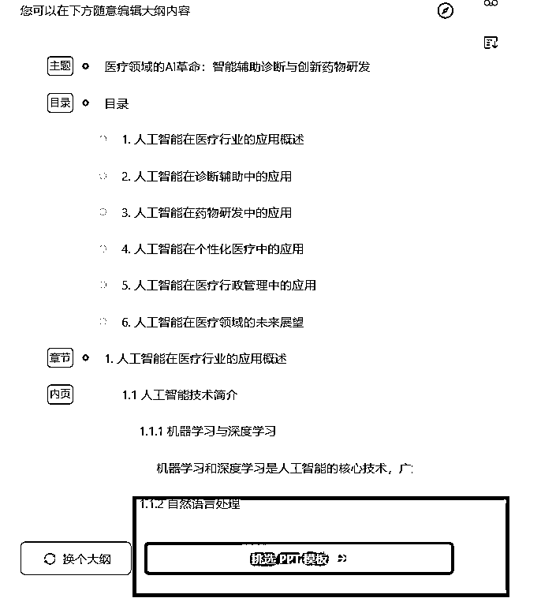
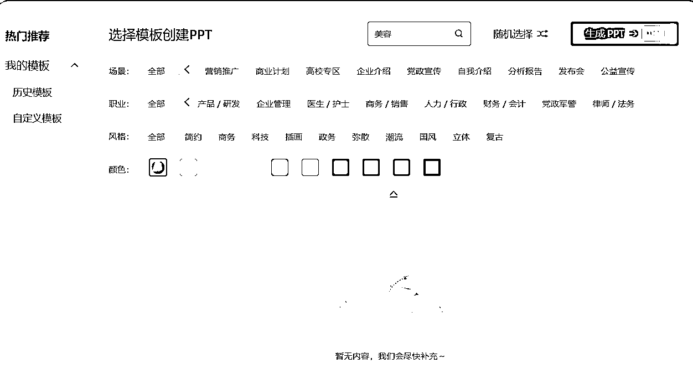

来源：https://hjue9evklt.feishu.cn/docx/JP7VdLVQGonCNFxuCPzcdk7qnhf
Hi大家好，我是Livia
00年 | ENFP乐观小太阳 | 终身学习
毕业做一年销售迷茫无方向 → 实现自由职业AI写作月纯利润1.7W
AI写作高客单细分题材之一，独家PPT技巧
观察到社群里关于『AI+PPT制作』的内容较少（大多聚焦文字类创作）
我整理了一份自己的PPT变现路径：
从初期接5元/页的低价单
到通过AI提效后，淘宝黑奴店都能实现单页100元（他们实际收客户400元/页）
本篇内容：《从零到一：PPT+AI光速接单指南（小白必看！）》
▷ 下篇预告：《从5元到400元的PPT真实路径：AI提效全流程拆解》
希望能帮想实践AI+PPT项目的朋友少走弯路
背景
双非国贸文科生，毕业后进入外贸行业，却困于流水线式工作，深感职业天花板
兼职探索中偶然接触到「生财有术」三天体验卡，被社群里可复用非空谈的项目实操路径吸引
评估多个项目后决定入局AI写作赛道
项目成长路径
放张我的部分订单记录吧（每次都会详细的记录单价和时间看是否还有提速空间）
重要提示！！！
接一单淘宝赚100/页看似稳妥，但大佬们自主引流客单价直接翻几倍
原因？我没及时做流量
一个例子（以1000块钱的订单为例）
自主引流VS平台
1000和1000*0.4哪个更值得你算算就知道啊！
这边建议大家尝试接单两周后就可以去做流量了，不要沉溺！不要做黑奴！
获取流量的详细链路
关于流量，我直接推荐大家去看bu懂老师的全链条经验贴
里面包含了完整的自主引流策略，让你摆脱平台依赖，实现收入质的飞跃
流量端做到月GMV17w的大佬，快去学！！！
https://scys.com/articleDetail/xq_topic/4848282444142428
本节内容全部摘自Cheese海盐芝士老师的开源教程，结合我个人经验选了几个常用的提示词
想要学习最全面的提示词底层逻辑，建议全篇学习以下教程
我入局AI写作就是学习海盐老师的经验贴，地表最强，主页还有很多，强推！！！
https://scys.com/articleDetail/xq_topic/4844284125554258
核心逻辑：告诉AI“你现在是XX专家”，限定它的回答风格和知识范围。
模板参考：
你是一名[XX领域]的[资深专家/金牌销售]
请用[专业/通俗]语言
完成以下任务：[具体需求]
避坑指南：角色越具体，效果越好（如“10年经验的宠物营养师”＞“营养师”）。
案例：角色扮演法写耳机评测
需求：写一篇小白能看懂的蓝牙耳机评测
Prompt设计：
你是一名耳机测评博主，有3年拆解500款耳机的经验，擅长用比喻让小白理解技术参数。
请用“手机拍照对比”的方式，解释【降噪深度30dB】和【蓝牙5.3协议】的实际体验差异。
核心逻辑：大任务拆成不可再分的小步骤，让AI逐个击破。
先造标题，再搭框架，最后填内容。
模板参考：
任务：写一篇《如何选蓝牙耳机》的知乎文
拆解：
1.生成10个吸引小白的标题
2.列出文章五大核心知识点
3.为每个知识点配真实案例
案例：原子任务法做母婴号涨粉计划
需求：制定小红书母婴号1个月涨粉1W策略
任务拆解：
生成10个0-1岁宝妈必看选题
设计3个引发互动的标题句式
列出拍摄必备道具
制定日更排期表（含热点借势节点）
核心逻辑：复杂任务必须分阶段处理，避免AI“一口吃撑”。
AI像小学生，一次只能解一道题，别让它做奥数卷子。
模板参考：
请按以下步骤处理：
① 分析用户需求中的关键词
② 结合XX行业痛点列举3个解决方案
③ 用表格对比方案优缺点
④ 给出具体执行步骤
案例：任务拆解法写行业报告
需求：分析2024年智能手表市场趋势
分步指令：
① 列出智能手表三大核心消费群体
② 统计京东/天猫销量TOP10品牌的定价区间
③ 用SWOT分析法对比华为Watch GT4和Apple Watch S9
④ 预测2024年技术突破方向
小白技巧：每步生成后追加“请用小学生能听懂的话总结结论”。
基于自然语言处理中的歧义消除原理，减少AI的意图猜测成本，提升响应准确性。
如果你说“帮我找点资料”，它可能不知道你要“论文参考文献”还是“短视频素材”
描述越具体（比如限定时间、类型、用途），它越不会跑偏。
提示词示例：
【任务】
请提供2023年新能源汽车行业PDF格式市场分析报告
（含市场规模、竞争格局及趋势预测）
用于学术论文参考文献
需附中英文权威机构来源及三年数据图表
注意力机制模型（如Transformer）对长文本的冗余信息敏感，简洁输入可降低噪声干扰。
如果输入里夹杂着“那个…其实…可能…”，它会分不清重点
一个提示词并不是字数越多，效果越好
通过模式匹配机制，示例能引导模型学习输出格式和内容标准。
AI需要参考答案格式，比如你说：“像这样写：1.背景 2.方法 3.结论”
它就能秒懂你要的学术八股文结构，而不是自由发挥成散文。
可以投喂文本格式/文本风格/计算具体方式等示例
提示词示例
【任务】
请按以下学术结构撰写：
1.背景：简述研究问题及现状，引用2-3篇关键文献
2.方法：明确说明实验设计、数据来源及分析方法
3.结论：用“本研究首次发现...”句式总结成果，并指出实践价值
【参考示例】
1.背景：基于Smith的供需理论，当前社区医疗资源...
2.方法：采用分层抽样法，收集2020-2022年三甲医院门诊数据...
3.结论：首次证实资源配置效率与患者满意度呈显著正相关
基于上下文学习的检索增强生成（RAG），输入素材直接影响输出相关性。
给AI塞参考资料就像考试前划重点
如果你给它10篇区块链论文，它输出的内容会比只问“区块链是什么”专业10倍
和技巧3是差不多，但是投喂素材比技巧3投喂正向案例要泛~
通过显示token限制和logit_bias技术控制输出长度和格式。
用硬性指标框住AI的脑洞，比如要求“分三点回答，每点不超过50字”
分点它可以做得很好，字数有时候它计算的很不准确，可以多次生成
提示词示例
【任务】
CHATGPT和DEEPSEEK哪个好用？
请从3个不同的维度分析并给我一个结论
每点不超过50字
利用迭代推理（chain-of-thought）弥补单次生成的信息遗漏。
AI像急着交卷的学生，经常漏写“解”字
让它自己复查一遍，相当于考完试提醒：“再检查下姓名学号填了吗？”
质问就对了，“你看看，这对吗？”“你确定吗？“他很会反思自我滴~
【角色】PPT设计大师，具有三十年行业经验
【任务】
帮我把附件1表格设计成10页PPT的数据分析内容，给我PPT设计大纲。
三个版本的不同方案
【要求】
1.文件是采购经理的年终汇报总结，需要用到图表
2.数据分析需要体现24年比23年进步的地方
3.文字分析部分需要分成3点
【示例】
附件2是我之前的数据分析过程拆解，请学习
【角色】（角色法）PPT设计大师，具有三十年行业经验
【任务】
帮我把附件1表格设计成10页（字数/页数限定）PPT的数据分析内容，给我PPT设计大纲。
三个版本的不同方案
【要求】
1.文件是采购经理的年终汇报总结，需要用到图表
2.数据分析需要体现24年比23年进步的地方（具体描述）
3.文字分析部分需要分成3点（分点法）
【示例】
附件2（投喂素材正向示例）是我之前的数据分析过程拆解，请学习
关于用WPS还是OFFICE的争论一直很多，到底选啥？
以下为推荐的两个主流好用的一键生成AI PPT工具：
具体使用方法如下：
访问官网 https://www.aippt.cn/
点击【开始智能生成】按钮
这种情况客户只给你一个主题或者简单任务，那么直接选择AI智能生成，他会根据你的主题先生成大纲，再根据大纲丰富每一页的内容
具体操作步骤：
1.选择「AI智能生成」模式
2.输入提示词强化需求
以一份医学PPT为例
请生成医疗行业专业风格的PPT，
包含病例影像识别、药物分子模拟、智能问诊三个应用场景，需要5张数据图表
直接上传word\pdf\txt等文档格式需要开会员
如果不想开会员，可以把需要生成的内容用其他AI生成markdown格式再输入

输入刚才的提示词后系统会跳出如下界面

若大纲有需要修改的地方可以点击如下按钮进行修改
任意内容双击便会跳出来编辑窗口，修改调整即可

点击【挑选PPT模板】

点击这个箭头小标可以选更多模板
展开后模板风格里面可以选择颜色、应用场景、职业
也可以选择右上角的更多按钮
我们是医学注意的就可以直接搜索关键词“医学”

右下角点【去编辑】人工检查内容修改
进入后是这样的界面

具体常用的编辑板块如下：
每一板块都可以点进去编辑
也可以在下方点击垃圾桶图表删除

编辑后发现模板不合适还可以再修改


可以插入文本、形状、图片、素材、表格等元素

点击【多页合成】后选择需要合并的幻灯片进行合并
此功能需要付费哦

点击右侧编辑栏编辑即可
点击右上角下载即可导出文件，AIPPT导出需要付费

AIPPT的功能建议买日租套餐
WPS 超级会员+WPS AI PPT的组合套餐哦，1元/天
单买有些功能实现不了
点击左下角的【灵犀】打开AI+PPT的界面
接入R1模式和联网搜索，让内容更加智能化

在对话框内输入需求，可以添加文件附件和页数要求
还是以以上的医学PPT为例
选择Deepseek-R1深度思考模式，加入联网搜索
同时输入提示词
以一份医学PPT为例
请生成医疗行业专业风格的PPT，
包含病例影像识别、药物分子模拟、智能问诊三个应用场景，需要5张数据图表

生成后在左下角点击“选择模板”
（这个按钮模板有限，等下进去可以换）
然后点击“生成PPT”按钮
在生成PPT的页面结束后，可以再替换右侧模板
或者上传模板识别

一般这个时候的质量还是不行的，可以点击【去WPS编辑】
这个版面就和WPS的PPT版面很像
编辑字体颜色等点【开始】

点击【插入】可以编辑图表、关系图等

结构页是PPT的导航系统，需同时满足信息传递与视觉引导功能。
其中包含了封面页/结尾页/目录页/章节页
以下为年终总结常见模板示例
（黄金3秒法则）
核心目标：3秒传递主题、主讲人、风格基调
设计技巧：
提取官网透明背景Logo放右上角
副标题字号≤主标题的70%
核心目标：清晰展示3-5个内容模块及其逻辑关系
优化方案：
用数字图标+关键词
在目录底部添加与章节页呼应的渐变线条
核心目标：提示内容切换，强化逻辑分段
要素设计：
延续封面字体/配色（保持视觉统一）
当前章节序号放大至页面1/3高度
章节名称≤8个字
核心目标：优雅收尾，强化观众记忆点。
内容类型选择：
感谢型：复制封面页版式，替换文字为“感谢聆听”
金句型：引用论文结论句，用毛笔字体+红色渐变
互动型：添加二维码
内容页的核心任务是信息高效传达，需同时满足逻辑清晰与视觉舒适的双重需求。
标题层级：主标题（24pt）+副标题（18pt）+正文（14pt）
呼吸感留白：页面四周预留10%-15%空白区域，图文间距≥1cm，避免视觉压迫
章节归属 + 小标题 + 正文内容
整个页面只有几个字 + 配图
文科PPT的核心是把观点理清楚，模板直接交给AI搞定！
反正不用改图表调代码，小白冲就完事了！

步骤
1/ 内容整理：把长文里的观点提炼出来
答辩内容拆成小标题+关键词
比如“研究背景→案例→结论”，丢给AI自动分点，不用纠结实验数据或代码~
2/ 设计偷懒：模板直接用！
文科PPT不用搞复杂配图！
AI生成的纯色模板+微软雅黑字体，直接白底黑字都OK
反正老师只看你逻辑顺不顺，样式选AIPPT里面基本的学术模板就可以
3/ 逻辑检查：重点！重点！
AI生成后一定要看标题有没有贴切论文本身！
（“发现问题→分析原因→解决对策”）自己捋一遍顺不顺，答辩时老师爱问这个
现在以【省域入境旅游服务贸易竞争力研究】这份文件作为样稿案例，利用WPSAI，给大家做一个案例拆解
打开论文文档，重点看三个部分：
✅ 目录结构
✅ 研究方法
✅ 现状、问题、策略等主要观点
【任务】
我的答辩文章题目为《XXX》，需要你为我生成一份PPT设计大纲，XX页
【结构要求】
封面页
目录页
正文页（根据正文实际内容设计）
总结页
致谢页
【要求】...
大纲生成好了，需要根据大纲匹配上原文相应的内容，直接投喂以下提示词

生成后把内容复制到文档内存起来，可以命名PPT详细内容设计
打开WPS → 新建「演示文档」→ 点击顶部工具栏「WPS 灵犀」→ 选择「AI PPT」
（点击回形针上传论文+前两步的Word大纲）
如提示词让他生成匹配主题的PPT
我的答辩题目《XXX》，请根据附件生成20页PPT：
风格：学术严谨但不死板
等待生成
点击生成PPT，并挑选上方合适的模板即可

答辩主题优选风格：冷色系如蓝色绿色+ 大部分的白底

这类客户可以理解为"职场PPT急救人群"。
一位干了二十年的车间老师傅，突然被要求用PPT汇报技术经验。
他平时连电脑开关机都不熟练，更别说做PPT了。
这时候他只能赶紧向外求助可能是淘宝代做，也可能是AI自动生成的PPT。
但基本AIPPT他们也不是很熟悉如何使用的，我们就捡信息差的漏啦！！！
风险点：客户要求几个小时就要完成，这类订单表面看时间短报酬高，客户给了加急费，实际藏着很大的不确定风险。
具体问题：
我们用AI工具生成初稿后，经常发现某些页面需要手动调整比如特殊图表/复杂排版。
这时候如果连PPT基础操作都不熟练，光是调整字体对齐都要花半小时，更别说处理客户中途新增的要求。
对PPT软件基础不扎实的人来说不友好
风险点：客户发来的PPT已经是有完整内容和模板的半成品，要求"优化得更高大上"
客户心理误区：认为"不就是调个颜色换张图"
但是实际可能涉及：
收费难题：客户看到成品后常会说："这和原来的差不多啊"，特别是当原稿本身不算太差时，他们根本意识不到背后200多处细节调整，最后钱和时间都没有了
为什么AI工具搞不定？
AI生成的动画只有"淡入淡出"或"左右飞入"这类基础动作。比如客户想要「用动画画出建筑结构」，AI只能让整个图片突然出现，做不到「从地基→墙体→屋顶」分层建造的效果。
踩坑案例：
之前我接了个儿童教育PPT订单，客户要求「字母A变成苹果的动画」。AI只能让字母消失后苹果出现，而客户想要的是字母A的横杆慢慢弯曲成苹果轮廓。结果花了3小时研究动画路径工具，最后客户退钱了。
避坑：
有些客户会发来参考视频说："就要这种效果"，但其实视频里的动画是用专业影视软件制作的，一定要提前问清楚动画细节。

案例解析：
"问卷结果有300份，需要统计成饼图柱状图"
为什么进新手黑榜？
1 AI变"复读机"风险
当客户发来包含678条销售记录的Excel时：
AI只会把数据转成文字："7月销量最高达230万，环比增长12%"
实际需要的是：
整理数据删除无效条目
用折线图对比6-7月趋势
在图表旁标注重点数据
2 客户预期错位
客户觉得："你不是AI生成很快的吗？"
实际上：
数据有错误时，比如合计金额≠明细相加，AI不会提示
需要制作组合图表，比如柱状图+折线图双坐标，AI只会生成分开的两个图
如果客户中途要求修改数据源，所有图表都要手动重调
社交媒体网络上的很多营销号把它们宣传得天花乱坠：
"只需给一个标题，就能生成精美PPT"？？？
但实际使用后你会发现，这些工具存在不少问题：
生成的文字内容往往"假大空"，客户很容易质疑"我为什么不自己用AI生成"
这一块如何提高质量直接跳转底层逻辑复习一下，学习怎么用提示词生成优质内容
AI很难保证生成的内容与选择的模板风格一致
比如美容美业也是一个很常见且热门的行业，客户需要做PPT的时候，AIPPT的模板库不够用了
若我们用别的风格硬凑，通常客户都会不满意

它导出的字体非常小，后期调整修改反而增加了工作量
在我接单初期PPT不熟悉，全都用AIPPT生成，客户反馈字很小需要全部重新调整
非常浪费时间

美观是“放大器”，内容才是“声源”
表面美观的PPT若缺乏核心逻辑，观众只会记住画面而非观点，本末倒置！
AIPPT这类软件内容质量问题堪忧，建议高价单用更好的提示词来生成详实的观点内容
以上就是全部的经验分享，感恩AI写作，让我这样的普通文科生短期内实现自由办公
生财社群指路——迷茫中指引赛道
海盐团队带练——帮我将卡点逐一击破
AI时代的希望——人人皆有翻盘的机会
如果你现在仍然困顿于自己并不喜欢的那份工作中，
希望我的这篇小帖能够给到大家希望和启发。
我这样毫无背景的普通人，尚能借AI之翼挣破枷锁，你定能找到属于自己的破局点！